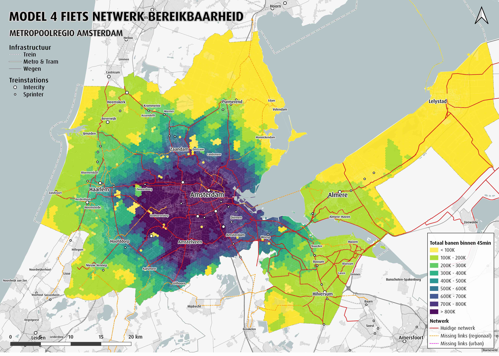
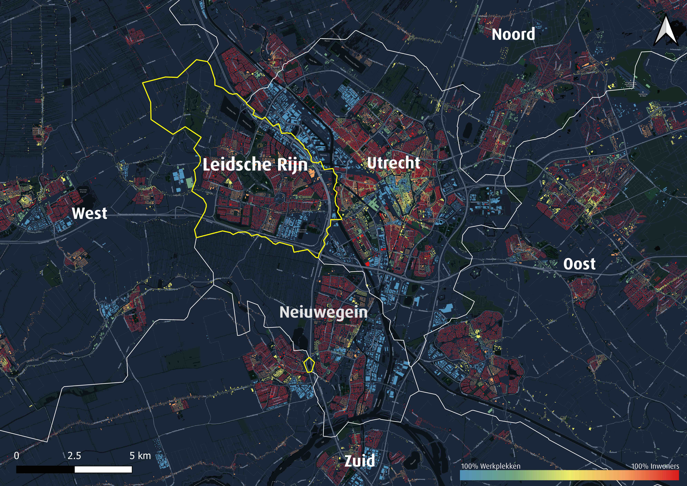
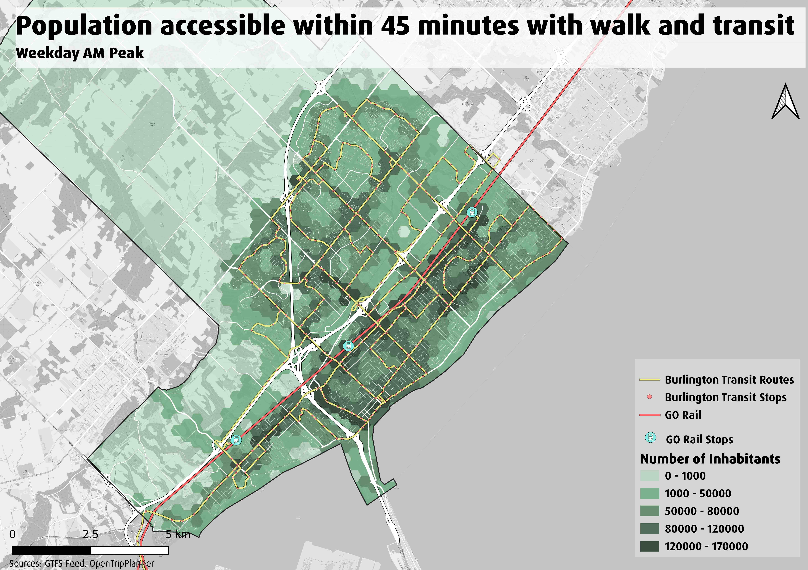
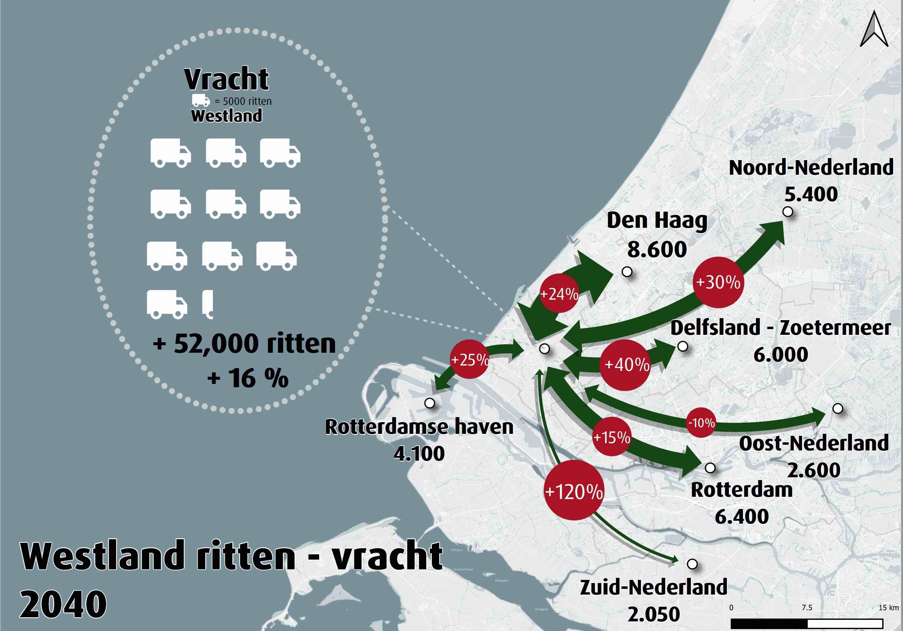
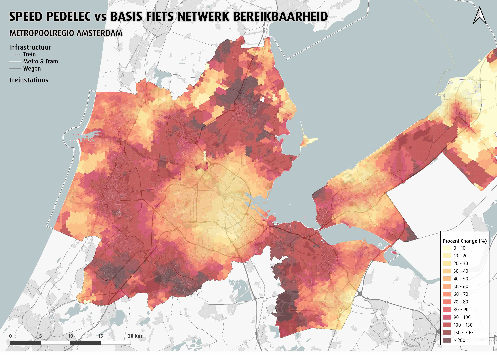
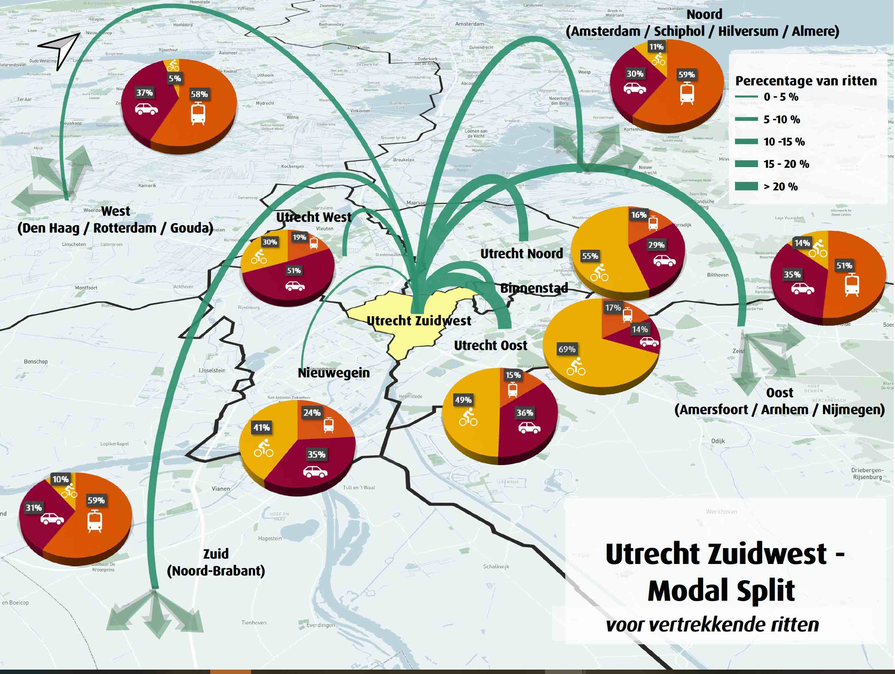
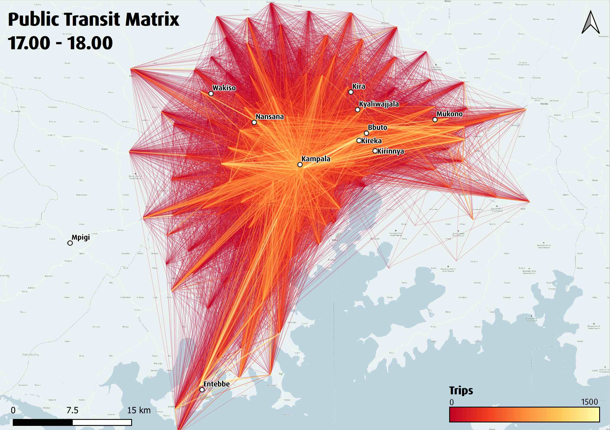
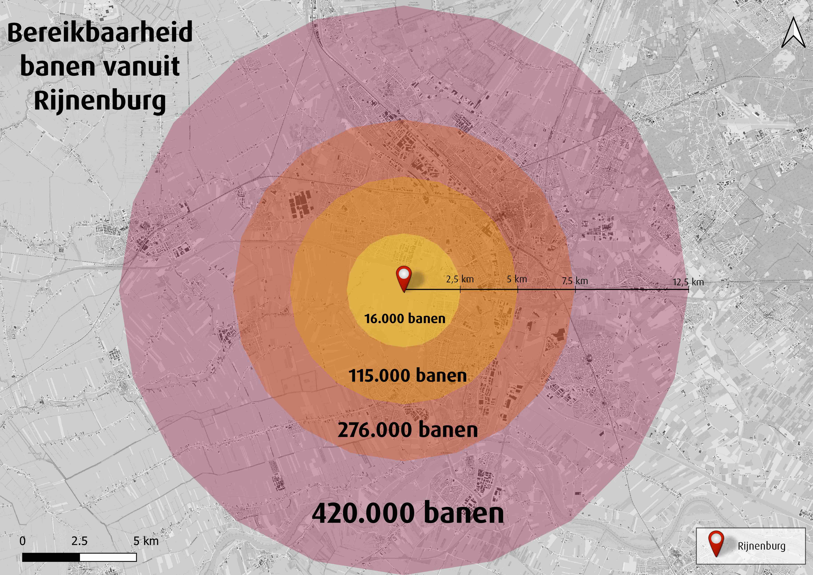
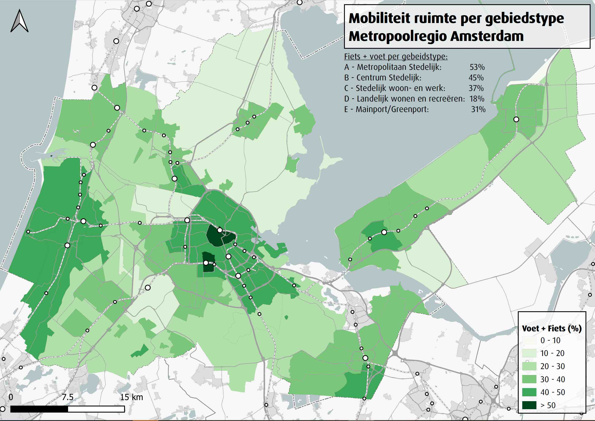

A collection of data maps produced for various projects. For the maps all data was cleaned and analyzed in either Python or PostgreSQL. They are then displayed using PostGIS and QGIS.

Produced for the regional government of Amsterdam, this map shows the number of jobs accessible within 45 minutes from different locations throughout the region. This project was designed to give stakeholders a better understanding of the impacts of changes to the bike network. Here Model 4 shows upgrades to the regional and urban network.

A map produced for the municipality of Utrecht to highlight the ratio of housing and workplaces throughout the region. This map assisted in the planning of public transit infrastructure upgrades to more mixed use areas.

This work was developed for the municipality of Burlington in Canada. Once again, this map highlights the number of inhabitants one can reach in 45 minutes using public transit. From this analysis, we are able to find weak spots in the network and suggest improvements to certain areas.

This map compares the predicted freight usage of 2040 to the 2014 model. Using this map we can understand where growth is concentrated and where infrastructure may need to be improved to support more freight.

An analysis of the difference between different bike models in the regional municipality of Amsterdam. Here the basis, or current, bike network is compared to the Speed Pedelec network, which simulates upgrades to the regional and urban bike networks as well the addition electric bikes. Using this map, stakeholders can understand where the investments will most pay off the in the region in relation to access to jobs.

Produced for the municipality in Utrecht, this map shows the modal splits and percentage of trips taken from the Southwest region of the city. Here we can see where the majority of individuals are traveling and by what modes they are making those trips.

A public transit matrix in the city of Kampala, Uganda. Each line represents at least one trip taken by public transportation, with the brighter lines indicating more frequented routes.

This map shows the number of jobs that lie within each ring of the Dutch city of Rijnenburg.

In this map, produced again for the regional municipality in Amsterdam, we can see the percentage of transportation network dedicated to the pedestrian and the bike. Amsterdam, the area in dark green, not surprisingly leads the country in this regard.